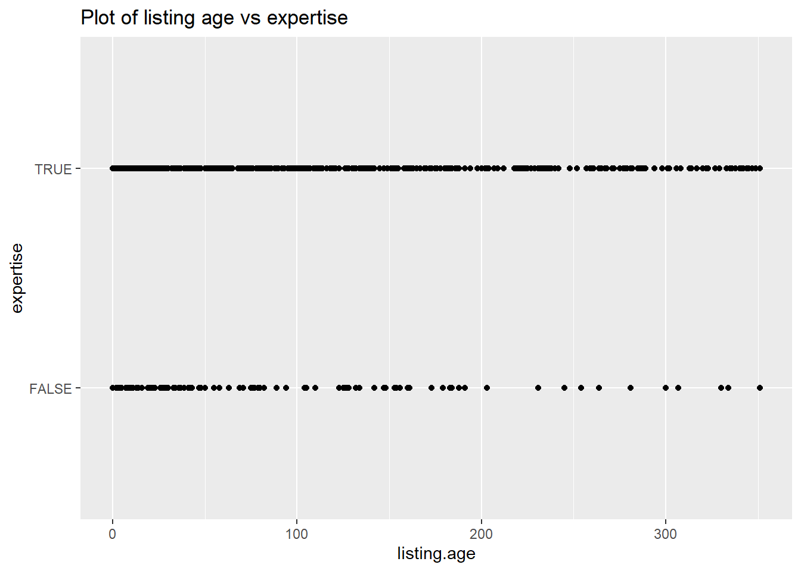

In this part we will attempt to answer our research questions by analysing our graphs, and making regression models.
Q1. Which physical factors have the biggest impact on used car prices?
Our dependant variable will be price. We will make a regression model that includes all of our variables then do a stepwise regression (backward) to remove non significant variables, in order to find the optimal model.
We will first have a look at the variables vehicle.age and kilometers, which we think will have the greatest impact on prices, to make sure the errors are linear. Below are the residuals vs fitted values plots of our 5 car models, for a simple linear regression of vehicle.age on price.
# golfggplot(lm(golf$price ~ golf$vehicle.age), aes(x = .fitted, y = .resid)) +geom_point() +geom_hline(yintercept =0, color ="red", linewidth =1) +geom_smooth()
Code
# audiggplot(lm(audi$price ~ audi$vehicle.age), aes(x = .fitted, y = .resid)) +geom_point() +geom_hline(yintercept =0, color ="red", linewidth =1) +geom_smooth()
Code
# skodaggplot(lm(skoda$price ~ skoda$vehicle.age), aes(x = .fitted, y = .resid)) +geom_point() +geom_hline(yintercept =0, color ="red", linewidth =1) +geom_smooth()
Code
# volvoggplot(lm(volvo$price ~ volvo$vehicle.age), aes(x = .fitted, y = .resid)) +geom_point() +geom_hline(yintercept =0, color ="red", linewidth =1) +geom_smooth()
Code
# toyotaggplot(lm(toyota$price ~ toyota$vehicle.age), aes(x = .fitted, y = .resid)) +geom_point() +geom_hline(yintercept =0, color ="red", linewidth =1) +geom_smooth()
The relationship between price and vehicle age is obviously not linear. The blue line that represents the residuals should be more horizontal to resemble the red fitted values line. We can see this when we plot both variables with a linear method vs a loess method.
In the graph above for the VW Golf, we can see that the average price goes up after a vehicle age of approx. 9000 days (= 24 years, 7 months, 21 days) which is counter-intuitive. One hypothesis would be that these cars could be considered as vintage or collector cars, and therefore won’t appeal to the average buyer, who is a daily driver. These types of cars have usually been very well maintained and have low mileage, which could also explain this overvaluation. We also notice that the curve is steeper and therefore cars seem to depreciate faster in their first 2500 days (6 years, 10 months, 2 days) than in their next 7500 (20 years, 6 months, 12 days).
We repeat the process but replace vehicle.age by kilometers and notice similar results.
# golfggplot(lm(golf$price ~ golf$kilometers), aes(x = .fitted, y = .resid)) +geom_point() +geom_hline(yintercept =0, color ="red", linewidth =1) +geom_smooth()
Code
# audiggplot(lm(audi$price ~ audi$kilometers), aes(x = .fitted, y = .resid)) +geom_point() +geom_hline(yintercept =0, color ="red", linewidth =1) +geom_smooth()
Code
# skodaggplot(lm(skoda$price ~ skoda$kilometers), aes(x = .fitted, y = .resid)) +geom_point() +geom_hline(yintercept =0, color ="red", linewidth =1) +geom_smooth()
Code
# volvoggplot(lm(volvo$price ~ volvo$kilometers), aes(x = .fitted, y = .resid)) +geom_point() +geom_hline(yintercept =0, color ="red", linewidth =1) +geom_smooth()
Code
# toyotaggplot(lm(toyota$price ~ toyota$kilometers), aes(x = .fitted, y = .resid)) +geom_point() +geom_hline(yintercept =0, color ="red", linewidth =1) +geom_smooth()
We can try to fix this using second degree variables. We add vehicle.age squared and kilometers squared as variables to our datasets and run the plots again. Below are the residuals vs fitted value plots of regressions lm(price ~ vehicle.age + vehicle.aged.squared + kilometers + kilometers.squared).
These plots look much better than the ones before. We still notice heteroskedasticity in the errors, especially for the Audis and Volvos.
We need to do a little bit more data wrangling for this question. We need to transform our columns body.type, fuel.type, transmission and drivetrain into logical variables, in order to be able to use them in our regression model.
Code
### golf# For body.type, we can see that the majority of cars are either "Limousine", "Break" or "Cabriolet".# We will then create a logical column "wagon" which will be set to TRUE where body.type == "Break" is TRUE (Note: "break" is a reserved word). We do the same for columns "cabriolet", "small.car" and "coupe". When all 4 are FALSE, the body.type will be Limousine.table(golf$body.type)golf$wagon <- golf$body.type =="Break"golf$cabriolet <- golf$body.type =="Cabriolet"golf$small.car <- golf$body.type =="Petite voiture"golf$coupe <- golf$body.type =="Coupé"# We will repeat the process for fuel.type. Columns will be "diesel", "hybrid", "natural.gas" and "electric"golf$diesel <- golf$fuel.type =="Diesel"golf$hybrid <-ifelse(golf$fuel.type =="Hybride léger essence/électrique"| golf$fuel.type =="Hybride rechargeable essence/électrique", TRUE, FALSE)golf$natural.gas <- golf$fuel.type =="Gaz naturel (CNG) / Essence"golf$electric <- golf$fuel.type =="Électrique"# We repeat the process for transmission. We will only have one variable "manual". We consider "Boîte manuelle automatisée" to be automatic because it is very similar to an automatic transmission.golf$manual <-ifelse(golf$transmission =="Automatique"| golf$transmission =="Boîte manuelle automatisée"| golf$transmission =="Boîte automatique variable", FALSE, TRUE)# We repeat the process for drivetrain. We will create one column "awd". We will neglect "Propulsion" and leave it as false, the same as for "Traction avant" because there are only 2 observations.golf$awd <- golf$drivetrain =="4 roues motrices"### audi# For body.type, we can see that the majority of cars are either "Limousine", "Break" or "Cabriolet".# We will then create a logical column "wagon" which will be set to TRUE where body.type == "Break" is TRUE (Note: "break" is a reserved word). We do the same for columns "cabriolet", "small.car" and "coupe". When all 4 are FALSE, the body.type will be Limousine.table(audi$fuel.type)audi$wagon <- audi$body.type =="Break"audi$cabriolet <- audi$body.type =="Cabriolet"audi$small.car <- audi$body.type =="Petite voiture"audi$coupe <- audi$body.type =="Coupé"# We will repeat the process for fuel.type. Columns will be "diesel", "hybrid", "natural.gas" and "electric"audi$diesel <- audi$fuel.type =="Diesel"audi$hybrid <-ifelse(audi$fuel.type =="Hybride léger essence/électrique"| audi$fuel.type =="Hybride rechargeable essence/électrique"| audi$fuel.type =="Hybride léger diesel/électrique", TRUE, FALSE)audi$natural.gas <- audi$fuel.type =="Gaz naturel (CNG) / Essence"audi$electric <- audi$fuel.type =="Électrique"# We repeat the process for transmission. We will only have one variable "manual". We consider "Boîte manuelle automatisée" to be automatic because it is very similar to an automatic transmission.audi$manual <-ifelse(audi$transmission =="Automatique"| audi$transmission =="Boîte manuelle automatisée"| audi$transmission =="Boîte automatique variable", FALSE, TRUE)# We repeat the process for drivetrain. We will create one column "awd".audi$awd <- audi$drivetrain =="4 roues motrices"### skoda# For body.type, we can see that the majority of cars are "Break".# We will then create a logical column "cabriolet" which will be set to TRUE where body.type == "cabriolet" is TRUE. We do the same for column "suv" and "sedan". When the 3 are FALSE, the body.type will be Break.table(skoda$body.type)skoda$cabriolet <- skoda$body.type =="Cabriolet"skoda$suv <- skoda$body.type =="SUV / Tout-terrain"skoda$sedan <- skoda$body.type =="Limousine"# We will repeat the process for fuel.type. Columns will be "diesel", "hybrid", and "natural.gas".skoda$diesel <- skoda$fuel.type =="Diesel"skoda$hybrid <-ifelse(skoda$fuel.type =="Hybride léger essence/électrique"| skoda$fuel.type =="Hybride rechargeable essence/électrique"| skoda$fuel.type =="Hybride léger diesel/électrique", TRUE, FALSE)skoda$natural.gas <- skoda$fuel.type =="Gaz naturel (CNG) / Essence"# We repeat the process for transmission. We will only have one variable "manual". We consider "Boîte manuelle automatisée" to be automatic because it is very similar to an automatic transmission.skoda$manual <-ifelse(skoda$transmission =="Automatique"| skoda$transmission =="Boîte manuelle automatisée"| skoda$transmission =="Boîte automatique variable", FALSE, TRUE)# We repeat the process for drivetrain. We will create one column "awd".skoda$awd <- skoda$drivetrain =="4 roues motrices"### volvo# For body.type, we can see that the majority of cars are "SUV / Tout-terrain", we have a very small amount that are other body types. These are errors, the XC60 only comes as an SUV.table(volvo$drivetrain)# We will create a logical column "diesel" which will be set to TRUE where fuel.type == "Diesel" is TRUE. We do the same for column "hybrid". When both are FALSE, the fuel.type will be petrol.volvo$diesel <- volvo$fuel.type =="Diesel"volvo$hybrid <-ifelse(volvo$fuel.type =="Hybride léger essence/électrique"| volvo$fuel.type =="Hybride rechargeable essence/électrique"| volvo$fuel.type =="Hybride léger diesel/électrique", TRUE, FALSE)# We repeat the process for transmission. We will only have one variable "manual". We consider "Boîte manuelle automatisée" to be automatic because it is very similar to an automatic transmission.volvo$manual <-ifelse(volvo$transmission =="Automatique"| volvo$transmission =="Boîte manuelle automatisée"| volvo$transmission =="Boîte automatique variable", FALSE, TRUE)# We repeat the process for drivetrain. We will create one column "fwd".volvo$fwd <- volvo$drivetrain =="Traction avant"### toyota# For body.type, we can see that the majority of cars are either "Limousine" or "Petite voiture".# We will create a logical column "sedan" which will be set to TRUE where body.type == "Limousine" is TRUE. We do the same for column "coupe". When both are FALSE, the body.type will be "Petite voiture".table(toyota$drivetrain)toyota$sedan <- toyota$body.type =="Limousine"toyota$coupe <- toyota$body.type =="Coupé"# We will repeat the process for fuel.type. Columns will be "diesel" and "hybrid".toyota$diesel <- toyota$fuel.type =="Diesel"toyota$hybrid <-ifelse(toyota$fuel.type =="Hybride léger essence/électrique"| toyota$fuel.type =="Hybride rechargeable essence/électrique"| toyota$fuel.type =="Hybride léger diesel/électrique"| toyota$fuel.type =="Hybride intégral essence/électrique",TRUE, FALSE)# We repeat the process for transmission. We will only have one variable "manual". We consider "Boîte manuelle automatisée" to be automatic because it is very similar to an automatic transmission.toyota$manual <-ifelse(toyota$transmission =="Automatique"| toyota$transmission =="Boîte manuelle automatisée"| toyota$transmission =="Boîte automatique variable", FALSE, TRUE)# We repeat the process for drivetrain. We will create one column "awd".toyota$awd <- toyota$drivetrain =="4 roues motrices"
Now we will make a regression model that includes all of our variables then do a stepwise regression (backward) to remove non significant variables.
Code
# golfgolf_model1 <-lm(golf$price ~ golf$kilometers + golf$kilometers.squared + golf$vehicle.age + golf$vehicle.age.squared + golf$power + golf$consumption + golf$expertise + golf$warranty + golf$wagon + golf$cabriolet + golf$small.car + golf$coupe + golf$diesel + golf$hybrid + golf$natural.gas + golf$electric + golf$manual + golf$awd)summary(golf_model1)golf_model2 <-stepAIC(golf_model1, direction ="backward")summary(golf_model2)# cabriolet and consumption are still not significant at an alpha of 0.01, we remove them# we subset the data first to exclude observations that contain NAgolf <- golf[complete.cases(golf[, c("kilometers", "kilometers.squared", "vehicle.age", "vehicle.age.squared", "power", "expertise", "warranty", "wagon", "diesel", "manual", "awd")]), ]golf_model3 <-lm(golf$price ~ golf$kilometers + golf$kilometers.squared + golf$vehicle.age + golf$vehicle.age.squared + golf$power + golf$expertise + golf$warranty + golf$wagon + golf$diesel + golf$manual + golf$awd)summary(golf_model3)# All of our variables are now significant. This will be our final modelgolf$price.residuals <- golf_model3$residualsgolf$pred.price <- golf_model3$fitted.values# audiaudi_model1 <-lm(audi$price ~ audi$kilometers + audi$kilometers.squared + audi$vehicle.age + audi$vehicle.age.squared + audi$power + audi$consumption + audi$expertise + audi$warranty + audi$wagon + audi$cabriolet + audi$small.car + audi$coupe + audi$diesel + audi$hybrid + audi$natural.gas + audi$electric + audi$manual + audi$awd)summary(audi_model1)# we subset the data first to exclude observations that contain NAaudi <- audi[complete.cases(audi[, c('kilometers', 'kilometers.squared', 'vehicle.age', 'vehicle.age.squared', 'power', 'consumption', 'expertise', 'warranty', 'wagon', 'cabriolet', 'small.car', 'coupe', 'diesel', 'hybrid', 'natural.gas', 'electric', 'manual', 'awd')]), ]audi_model2 <-stepAIC(audi_model1, direction ="backward")summary(audi_model2)# All of our variables are now significant. This will be our final modelaudi$price.residuals <- audi_model2$residualsaudi$pred.price <- audi_model2$fitted.values# skodaskoda_model1 <-lm(skoda$price ~ skoda$kilometers + skoda$kilometers.squared + skoda$vehicle.age + skoda$vehicle.age.squared + skoda$power + skoda$consumption + skoda$expertise + skoda$warranty + skoda$sedan + skoda$cabriolet + skoda$suv + skoda$diesel + skoda$hybrid + skoda$natural.gas + skoda$manual + skoda$awd)summary(skoda_model1)skoda_model2 <-stepAIC(skoda_model1, direction ="backward")summary(skoda_model2)# cabriolet and consumption are still not significant at an alpha of 0.01, we remove them# we subset the data first to exclude observations that contain NAskoda <- skoda[complete.cases(skoda[, c("kilometers", "kilometers.squared", "vehicle.age", "vehicle.age.squared", "power", "consumption", "expertise", "warranty", "diesel", "manual", "awd")]), ]skoda_model3 <-lm(skoda$price ~ skoda$kilometers + skoda$kilometers.squared + skoda$vehicle.age + skoda$vehicle.age.squared + skoda$power + skoda$expertise + skoda$warranty + skoda$consumption + skoda$diesel + skoda$manual + skoda$awd)summary(skoda_model3)# we remove consumption as it is no longer significantskoda_model3 <-lm(skoda$price ~ skoda$kilometers + skoda$kilometers.squared + skoda$vehicle.age + skoda$vehicle.age.squared + skoda$power + skoda$expertise + skoda$warranty + skoda$diesel + skoda$manual + skoda$awd)summary(skoda_model3)# All of our variables are now significant. This will be our final modelskoda$price.residuals <- skoda_model3$residualsskoda$pred.price <- skoda_model3$fitted.values# volvovolvo_model1 <-lm(volvo$price ~ volvo$kilometers + volvo$kilometers.squared + volvo$vehicle.age + volvo$vehicle.age.squared + volvo$power + volvo$consumption + volvo$expertise + volvo$warranty + volvo$diesel + volvo$hybrid + volvo$manual + volvo$fwd)summary(volvo_model1)# we subset the data first to exclude observations that contain NAvolvo <- volvo[complete.cases(volvo[, c('price', 'kilometers', 'kilometers.squared', 'vehicle.age', 'vehicle.age.squared', 'power', 'consumption', 'expertise', 'warranty', 'diesel', 'hybrid', 'manual', 'fwd')]), ]volvo_model2 <-stepAIC(volvo_model1, direction ="backward")summary(volvo_model2)# manual is still not significant at an alpha of 0.01, we remove itvolvo_model3 <-lm(volvo$price ~ volvo$kilometers + volvo$kilometers.squared + volvo$vehicle.age + volvo$vehicle.age.squared + volvo$power + volvo$consumption + volvo$hybrid)summary(volvo_model3)# All of our variables are now significant. This will be our final modelvolvo$price.residuals <- volvo_model3$residualsvolvo$pred.price <- volvo_model3$fitted.values# toyotatoyota_model1 <-lm(toyota$price ~ toyota$kilometers + toyota$kilometers.squared + toyota$vehicle.age + toyota$vehicle.age.squared + toyota$power + toyota$consumption + toyota$expertise + toyota$warranty + toyota$sedan + toyota$coupe + toyota$diesel + toyota$hybrid + toyota$manual + toyota$awd)summary(toyota_model1)toyota_model2 <-stepAIC(toyota_model1, direction ="backward")summary(toyota_model2)# warranty, hybrid, and consumption are still not significant at an alpha of 0.01, we remove them# we subset the data first to exclude observations that contain NAtoyota <- toyota[complete.cases(toyota[, c("kilometers", "kilometers.squared", "vehicle.age", "vehicle.age.squared", "power", "sedan", "manual", "awd")]), ]toyota_model3 <-lm(toyota$price ~ toyota$kilometers + toyota$kilometers.squared + toyota$vehicle.age + toyota$vehicle.age.squared + toyota$power + toyota$sedan + toyota$manual + toyota$awd)summary(toyota_model3)#we remove sedantoyota_model3 <-lm(toyota$price ~ toyota$kilometers + toyota$kilometers.squared + toyota$vehicle.age + toyota$vehicle.age.squared + toyota$power + toyota$manual + toyota$awd)summary(toyota_model3)# All of our variables are now significant. This will be our final modeltoyota$price.residuals <- toyota_model3$residualstoyota$pred.price <- toyota_model3$fitted.values
Now we have found our optimal regression models, we can have a look at their summaries and residuals vs fitted values plots.
The graphs of our residuals vs fitted values look better than the previous ones, with less heteroskedasticity. For the 5 car models that we have researched, the R-Squared values are between 0.90 and 0.94, which we consider to be very good. We still notice quite a high standard error for all vehicles, which decreases the reliability of the predictions and the usefulness of the tool.
Looking at the Toyota plot, we can notice 2 clearly defined clusters, which represent the cars with all wheel drive vs those with front wheel drive. This is not the only difference between these cars that explains the massive average price difference. When looking at the data, we see that there are 2 submodels of the Toyota Yaris; the “normal” Yaris and the new “TOYOTA Yaris 1.6 GR Sport”. The Sport Yaris is a new trim of the Yaris and therefore the listings have a higher average price. They also have more horsepower and AWD, both of which are correlated with higher prices.
We now need to check the models for multicollinearity. We can do this by calculating the VIF (Variance Inflation Factors) for our models.
#plotly bar chart with VIFs for each factor for each vehicle# golf# data frameplot_data <-data.frame(Variables =c("kilometers", "kilometers.squared", "vehicle.age", "vehicle.age.squared", "power", "expertise", "warranty", "wagon", "diesel", "manual", "awd"), VIF =vif(golf_model3))# function to display horizontal linehline <-function(y =0, color ="red") {list(type ="line",x0 =0,x1 =1,xref ="paper",y0 = y,y1 = y,line =list(color = color) )}# plotlyplot <-plot_ly(plot_data, x =~Variables, y =~VIF, type ='bar', marker =list(color ='grey')) %>%layout(shapes =list(hline(5))) |>layout(title ="Variance Inflation Factor (VIF) Values",xaxis =list(title ="Variables"),yaxis =list(title ="VIF"))# Display the plotplot
Code
# audi# data frame plot_data <-data.frame(Variables =c("kilometers", "kilometers.squared", "vehicle.age", "vehicle.age.squared", "power", "expertise", "warranty", "cabriolet", "diesel", "manual", "awd"), VIF =vif(audi_model2))# plotlyplot <-plot_ly(plot_data, x =~Variables, y =~VIF, type ='bar', marker =list(color ='grey')) %>%layout(shapes =list(hline(5))) |>layout(title ="Variance Inflation Factor (VIF) Values",xaxis =list(title ="Variables"),yaxis =list(title ="VIF"))# Display the plotplot
Code
# skoda# data frame plot_data <-data.frame(Variables =c("kilometers", "kilometers.squared", "vehicle.age", "vehicle.age.squared", "power", "expertise", "warranty", "diesel", "manual", "awd"), VIF =vif(skoda_model3))# plotlyplot <-plot_ly(plot_data, x =~Variables, y =~VIF, type ='bar', marker =list(color ='grey')) %>%layout(shapes =list(hline(5))) |>layout(title ="Variance Inflation Factor (VIF) Values",xaxis =list(title ="Variables"),yaxis =list(title ="VIF"))# Display the plotplot
Code
# volvo# data frame plot_data <-data.frame(Variables =c("kilometers", "kilometers.squared", "vehicle.age", "vehicle.age.squared", "power", "consumption", "hybrid"), VIF =vif(volvo_model3))# plotlyplot <-plot_ly(plot_data, x =~Variables, y =~VIF, type ='bar', marker =list(color ='grey')) %>%layout(shapes =list(hline(5))) |>layout(title ="Variance Inflation Factor (VIF) Values",xaxis =list(title ="Variables"),yaxis =list(title ="VIF"))# Display the plotplot
Code
# toyota# data frame plot_data <-data.frame(Variables =c("kilometers", "kilometers.squared", "vehicle.age", "vehicle.age.squared", "power", "manual", "awd"), VIF =vif(toyota_model3))# plotlyplot <-plot_ly(plot_data, x =~Variables, y =~VIF, type ='bar', marker =list(color ='grey')) %>%layout(shapes =list(hline(5))) |>layout(title ="Variance Inflation Factor (VIF) Values",xaxis =list(title ="Variables"),yaxis =list(title ="VIF"))# Display the plotplot
By definition, if a variable has a VIF score of 1, it is completely independent. As a rule of thumb, we consider variables with a VIF between 1 and 5 to be moderately correlated and those with a VIF higher than 5 to be highly correlated. These bar charts show us that for every model, vehicle.age and kilometers are clearly correlated. This is logical because the longer an owner has had a car for, the more days he has used it to travel, and the more kilometers have accumulated on the vehicle. In theory, it is possible to own a car and put very few or no kilometers on it for an extended period of time, as well as put a large amount of kilometers in a short amount of time. These 2 variables are equally of great importance to determine a vehicle’s price, and therefore we won’t exclude either of them from our model, despite there being severe multicollinearity.
When looking at the Toyota Yaris chart, we see that awd and power also have a high VIF, and we suspect that this is due to the Toyota Yaris Sport, which we saw has a much higher power and price than the others, and is the only Yaris to be AWD.
Q2. What are the factors that influence the duration of a listing for a used car?
f we first look at the data, we will see an enormous amount of listings on 2022-11-14, which is unrealistic, and most likely an error. We can see this clearly by visualising the frequency of listings by date.
ggplot(golf, aes(x = listing.age)) +geom_histogram(binwidth =3, fill ="skyblue", color ="black") +labs(title ="Histogram of Listing Duration",x ="Listing Duration (Days)",y ="Frequency" )
Code
ggplot(audi, aes(x = listing.age)) +geom_histogram(binwidth =3, fill ="skyblue", color ="black") +labs(title ="Histogram of Listing Duration",x ="Listing Duration (Days)",y ="Frequency" )
Code
ggplot(skoda, aes(x = listing.age)) +geom_histogram(binwidth =3, fill ="skyblue", color ="black") +labs(title ="Histogram of Listing Duration",x ="Listing Duration (Days)",y ="Frequency" )
Code
ggplot(volvo, aes(x = listing.age)) +geom_histogram(binwidth =3, fill ="skyblue", color ="black") +labs(title ="Histogram of Listing Duration",x ="Listing Duration (Days)",y ="Frequency" )
Code
ggplot(toyota, aes(x = listing.age)) +geom_histogram(binwidth =3, fill ="skyblue", color ="black") +labs(title ="Histogram of Listing Duration",x ="Listing Duration (Days)",y ="Frequency" )
When inspecting the listings one by one, we saw that this is not a scraping error, and this is really the data found on AutoScout24.ch. A possible explanation would be that all listings before this date have taken as a value this date. Regardless of the reason, we can safely assume that this doesn’t represent reality, so to prevent this from biasing our models, we will remove all observations with created.date set at 2022-11-14.
Our dependant variable will be listing.age. We will make a regression model that includes all of our variables then remove non significant variables, in order to find the optimal model.
Code
# golfgolf_model1 <-lm(golf$listing.age ~ golf$price + golf$price.residuals + golf$kilometers + golf$kilometers.squared + golf$vehicle.age + golf$vehicle.age.squared + golf$power + golf$consumption + golf$expertise + golf$warranty + golf$wagon + golf$cabriolet + golf$small.car + golf$coupe + golf$diesel + golf$hybrid + golf$natural.gas + golf$electric + golf$manual + golf$awd)summary(golf_model1)# No variable is significant at alpha = 0.01 except manual, let's test a simple linear model with manualgolf_model1 <-lm(golf$listing.age ~ golf$manual)summary(golf_model1)# No variable is significant# audiaudi_model1 <-lm(audi$listing.age ~ audi$price + audi$price.residuals + audi$kilometers + audi$kilometers.squared + audi$vehicle.age + audi$vehicle.age.squared + audi$power + audi$consumption + audi$expertise + audi$warranty + audi$wagon + audi$cabriolet + audi$small.car + audi$coupe + audi$diesel + audi$hybrid + audi$natural.gas + audi$electric + audi$manual + audi$awd)summary(audi_model1)# we notice again that no variables are significant at alpha = 0.01# skodaskoda_model1 <-lm(skoda$listing.age ~ skoda$price + skoda$price.residuals + skoda$kilometers + skoda$kilometers.squared + skoda$vehicle.age + skoda$vehicle.age.squared + skoda$power + skoda$consumption + skoda$expertise + skoda$warranty + skoda$sedan + skoda$cabriolet + skoda$suv + skoda$diesel + skoda$hybrid + skoda$natural.gas + skoda$manual + skoda$awd)summary(skoda_model1)# No variable is significant at alpha = 0.01 except sedan, let's test a simple linear model with sedanskoda_model1 <-lm(skoda$listing.age ~ skoda$sedan)summary(skoda_model1)# we notice again that no variables are significant at alpha = 0.01# volvovolvo_model1 <-lm(volvo$listing.age ~ volvo$price + volvo$price.residuals + volvo$kilometers + volvo$kilometers.squared + volvo$vehicle.age + volvo$vehicle.age.squared + volvo$power + volvo$consumption + volvo$expertise + volvo$warranty + volvo$diesel + volvo$hybrid + volvo$manual + volvo$fwd)summary(volvo_model1)# No variable is significant at alpha = 0.01 except expertise, let's test a simple linear model with expertisevolvo_model1 <-lm(volvo$listing.age ~ volvo$expertise)summary(volvo_model1)# expertise is significant, but the R squared is very low (0.014), we don't consider this to be a good model.# toyotatoyota_model1 <-lm(toyota$listing.age ~ toyota$price + toyota$price.residuals + toyota$kilometers + toyota$kilometers.squared + toyota$vehicle.age + toyota$vehicle.age.squared + toyota$power + toyota$consumption + toyota$expertise + toyota$warranty + toyota$sedan + toyota$coupe + toyota$diesel + toyota$hybrid + toyota$manual + toyota$awd)summary(toyota_model1)# No variable is significant at alpha = 0.01 except expertise, let's test a simple linear model with expertisetoyota_model1 <-lm(toyota$listing.age ~ toyota$price.residuals)summary(toyota_model1)# expertise is significant, but the R squared is very low (0.025), we don't consider this to be a good model.
It looks like almost none of the cars’ attributes can explain differences in listing ages. We have only managed to find 2 simple linear models with a significant variable for the Volvos and Toyotas, but looking at the plots below, we can see they aren’t very useful because the R squared values are very low.
ggplot(volvo, aes(listing.age, expertise)) +geom_point() +ggtitle("Plot of listing age vs expertise")

Code
summary(volvo_model1)
Call:
lm(formula = volvo$listing.age ~ volvo$expertise)
Residuals:
Min 1Q Median 3Q Max
-107.35 -73.35 -31.35 52.90 274.40
Coefficients:
Estimate Std. Error t value Pr(>|t|)
(Intercept) 76.598 8.254 9.280 < 2e-16 ***
volvo$expertiseTRUE 30.756 9.059 3.395 0.000722 ***
---
Signif. codes: 0 '***' 0.001 '**' 0.01 '*' 0.05 '.' 0.1 ' ' 1
Residual standard error: 93.02 on 746 degrees of freedom
Multiple R-squared: 0.01522, Adjusted R-squared: 0.0139
F-statistic: 11.53 on 1 and 746 DF, p-value: 0.000722
Code
ggplot(toyota, aes(listing.age, price.residuals)) +geom_point() +geom_smooth(method = lm) +ylim(min(toyota$price.residuals), max(toyota$price.residuals)) +ggtitle("Plot of listing age vs price residuals")
Code
summary(toyota_model1)
Call:
lm(formula = toyota$listing.age ~ toyota$price.residuals)
Residuals:
Min 1Q Median 3Q Max
-96.77 -48.02 -26.57 31.32 264.32
Coefficients:
Estimate Std. Error t value Pr(>|t|)
(Intercept) 67.444757 3.204419 21.047 < 2e-16 ***
toyota$price.residuals 0.004192 0.001175 3.567 0.000399 ***
---
Signif. codes: 0 '***' 0.001 '**' 0.01 '*' 0.05 '.' 0.1 ' ' 1
Residual standard error: 68.94 on 462 degrees of freedom
Multiple R-squared: 0.0268, Adjusted R-squared: 0.0247
F-statistic: 12.72 on 1 and 462 DF, p-value: 0.0003985
Q3. How do different car features affect depreciation ?
We will first filter our data to only include listings that have a value for new.price. Then we create a variable rel_dep for all of our datasets which will be the depreciation the car has experienced relative to its new price. We prefer this over simple depreciation (new price - actual price) because that variable would be a lot greater when the new price of the vehicle is large, which could bias our tests.
Code
# Libraries + datasetslibrary(tidyverse)library(corrplot)library(MASS)setwd("./cleaned-data")golf <-read.csv("golf_models_data.csv")audi <-read.csv("audi_models_data.csv")skoda <-read.csv("skoda_models_data.csv")volvo <-read.csv("volvo_models_data.csv")toyota <-read.csv("toyota_models_data.csv")golf <- golf |>filter(!is.na(new.price))audi <- audi |>filter(!is.na(new.price))skoda <- skoda |>filter(!is.na(new.price))volvo <- volvo |>filter(!is.na(new.price))toyota <- toyota |>filter(!is.na(new.price))# We create the depreciation variables# absolute depreciation will be a lot greater when the new price of the vehicle is large, which could bias our tests. To resolve this, we will create a variable rel_dep which is relative depreciation.golf$rel_dep <-1- golf$price/golf$new.priceaudi$rel_dep <-1- audi$price/audi$new.priceskoda$rel_dep <-1- skoda$price/skoda$new.pricevolvo$rel_dep <-1- volvo$price/volvo$new.pricetoyota$rel_dep <-1- toyota$price/toyota$new.price
rel_dep will be our dependent variable. We will make a regression model that includes all of our variables then do a stepwise regression (backward) to remove non significant variables, in order to find the optimal models.
Code
# golfgolf_model1 <-lm(golf$rel_dep ~ golf$kilometers + golf$kilometers.squared + golf$vehicle.age + golf$vehicle.age.squared + golf$power + golf$expertise + golf$warranty + golf$wagon + golf$cabriolet + golf$diesel + golf$hybrid + golf$natural.gas + golf$manual + golf$awd)summary(golf_model1)# stepwise regressiongolf_model2 <-stepAIC(golf_model1, direction ="backward")summary(golf_model2)# we remove variables not significant at alpha = 0.01golf_model3 <-lm(golf$rel_dep ~ golf$kilometers + golf$kilometers.squared + golf$vehicle.age + golf$vehicle.age.squared + golf$power + golf$diesel)summary(golf_model3)# we remove diesel (not significant)golf_model3 <-lm(golf$rel_dep ~ golf$kilometers + golf$kilometers.squared + golf$vehicle.age + golf$vehicle.age.squared + golf$power)summary(golf_model3)# audiaudi_model1 <-lm(audi$rel_dep ~ audi$kilometers + audi$kilometers.squared + audi$vehicle.age + audi$vehicle.age.squared + audi$power + audi$consumption + audi$expertise + audi$warranty + audi$cabriolet + audi$coupe + audi$diesel + audi$hybrid + audi$natural.gas + audi$manual + audi$awd)summary(audi_model1)# stepwise regressionaudi_model2 <-stepAIC(audi_model1, direction ="backward")summary(audi_model2)# we remove variables not significant at alpha = 0.01audi_model3 <-lm(audi$rel_dep ~ audi$kilometers + audi$kilometers.squared + audi$vehicle.age + audi$manual)summary(audi_model3)# skodaskoda_model1 <-lm(skoda$rel_dep ~ skoda$kilometers + skoda$kilometers.squared + skoda$vehicle.age + skoda$vehicle.age.squared + skoda$power + skoda$consumption + skoda$expertise + skoda$warranty + skoda$sedan + skoda$cabriolet + skoda$suv + skoda$diesel + skoda$hybrid + skoda$natural.gas + skoda$manual + skoda$awd)summary(skoda_model1)# stepwise regressionskoda_model2 <-stepAIC(skoda_model1, direction ="backward")summary(skoda_model2)# we remove variables not significant at alpha = 0.01skoda_model3 <-lm(skoda$rel_dep ~ skoda$kilometers + skoda$vehicle.age + skoda$diesel + skoda$hybrid)summary(skoda_model3)# volvovolvo_model1 <-lm(volvo$price ~ volvo$kilometers + volvo$kilometers.squared + volvo$vehicle.age + volvo$vehicle.age.squared + volvo$power + volvo$consumption + volvo$expertise + volvo$warranty + volvo$diesel + volvo$hybrid + volvo$manual + volvo$fwd)summary(volvo_model1)# stepwise regressionvolvo_model2 <-stepAIC(volvo_model1, direction ="backward")summary(volvo_model2)# we remove variables not significant at alpha = 0.01volvo_model3 <-lm(volvo$rel_dep ~ volvo$kilometers + volvo$kilometers.squared + volvo$vehicle.age + volvo$vehicle.age.squared + volvo$power)summary(volvo_model3)# we remove vehicle.age.squared and power (not significant)volvo_model3 <-lm(volvo$rel_dep ~ volvo$kilometers + volvo$kilometers.squared + volvo$vehicle.age)summary(volvo_model3)#toyotatoyota_model1 <-lm(toyota$rel_dep ~ toyota$kilometers + toyota$kilometers.squared + toyota$vehicle.age + toyota$vehicle.age.squared + toyota$power + toyota$expertise + toyota$warranty + toyota$sedan + toyota$manual + toyota$awd)summary(toyota_model1)# stepwise regressiontoyota_model2 <-stepAIC(toyota_model1, direction ="backward")summary(toyota_model2)# we remove variables not significant at alpha = 0.01toyota_model3 <-lm(toyota$rel_dep ~ toyota$vehicle.age + toyota$power)summary(toyota_model3)## toyota does not have many observations, so this model is probably not accurate.# continue this by looking at what is in q1
Now we have found our optimal regression models, we can have a look at their summaries and residuals vs fitted values plots.
ggplot(volvo_model3, aes(x = .fitted, y = .resid)) +geom_point() +geom_hline(yintercept =0, color ="red", linewidth =1) +geom_smooth()
Code
summary(volvo_model3)
Call:
lm(formula = volvo$rel_dep ~ volvo$kilometers + volvo$kilometers.squared +
volvo$vehicle.age)
Residuals:
Min 1Q Median 3Q Max
-0.48920 -0.03385 0.00644 0.03465 0.20551
Coefficients:
Estimate Std. Error t value Pr(>|t|)
(Intercept) 2.192e-01 7.653e-03 28.640 < 2e-16 ***
volvo$kilometers 2.123e-06 2.008e-07 10.571 < 2e-16 ***
volvo$kilometers.squared -4.278e-12 8.585e-13 -4.983 8.91e-07 ***
volvo$vehicle.age 8.565e-05 4.783e-06 17.908 < 2e-16 ***
---
Signif. codes: 0 '***' 0.001 '**' 0.01 '*' 0.05 '.' 0.1 ' ' 1
Residual standard error: 0.06118 on 454 degrees of freedom
Multiple R-squared: 0.814, Adjusted R-squared: 0.8128
F-statistic: 662.4 on 3 and 454 DF, p-value: < 2.2e-16
Code
ggplot(toyota_model3, aes(x = .fitted, y = .resid)) +geom_point() +geom_hline(yintercept =0, color ="red", linewidth =1) +geom_smooth()
Code
summary(toyota_model3)
Call:
lm(formula = toyota$rel_dep ~ toyota$vehicle.age + toyota$power)
Residuals:
Min 1Q Median 3Q Max
-0.34259 -0.05653 0.00814 0.06497 0.15685
Coefficients:
Estimate Std. Error t value Pr(>|t|)
(Intercept) 1.916e-01 3.518e-02 5.445 6.13e-07 ***
toyota$vehicle.age 1.106e-04 6.615e-06 16.716 < 2e-16 ***
toyota$power -7.904e-04 2.169e-04 -3.645 0.000487 ***
---
Signif. codes: 0 '***' 0.001 '**' 0.01 '*' 0.05 '.' 0.1 ' ' 1
Residual standard error: 0.09151 on 76 degrees of freedom
Multiple R-squared: 0.8413, Adjusted R-squared: 0.8371
F-statistic: 201.4 on 2 and 76 DF, p-value: < 2.2e-16
The residuals vs fitted values plots and summaries of the linear models are very similar to our first research question, where price was the dependent variable. This is likely because relative depreciation is strongly negatively correlated with price, as seen in our EDA. This makes sense, because we know that price is mostly influenced by vehicle age and kilometers thanks to our first question. These 2 factors are commonly cited in various definitions of depreciation for vehicles and essentially define the concept.
What is interesting to observe are other factors that are found to influence depreciation. Manual Audi A3s have a lower relative depreciation, and diesel and hybrid Skoda Octavias have a higher relative depreciation. We assume that these factors don’t have a significant effect on the vehicles’ physical depreciation, so the depreciation might be related to the customers’ demand.
Manual transmission is decreasingly prevalent among new cars, so this could be a strong selling point for older Audi A3s, which would explain the weaker depreciation.
Diesel engines have become and are still becoming increasingly unpopular since the Volkswagen emissions scandal in 2015, which could explain the stronger depreciation in diesel Skoda Octavias. The oldest hybrid Skoda in our dataset is from 2021, so it is shocking that the depreciation is higher than other fuel types as the average age and kilometers of the hybrids is much lower.